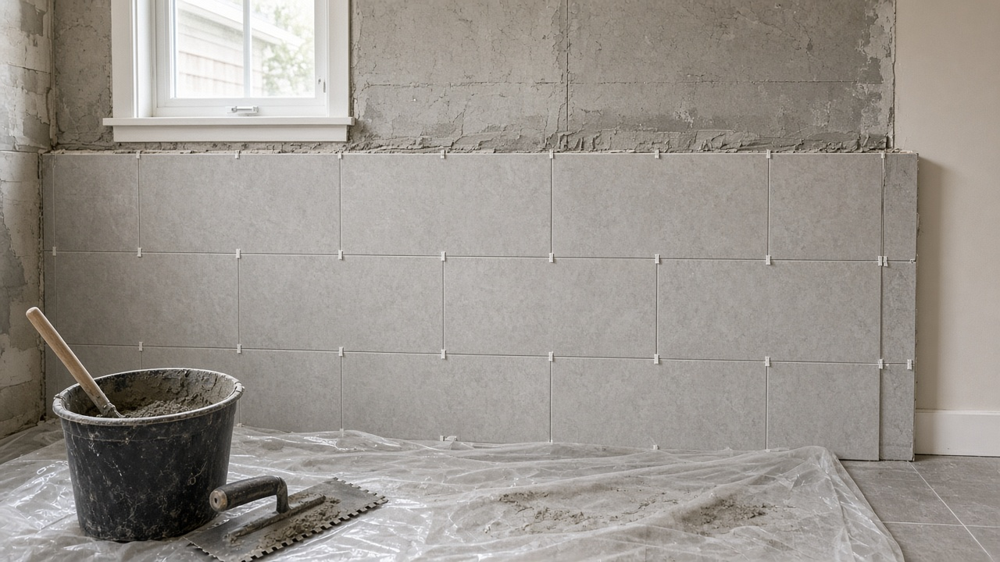
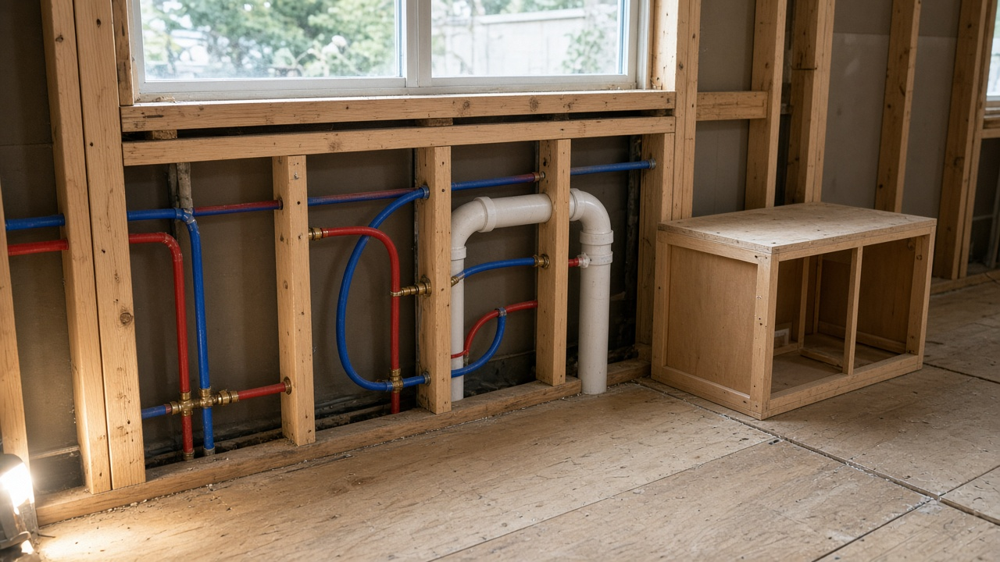
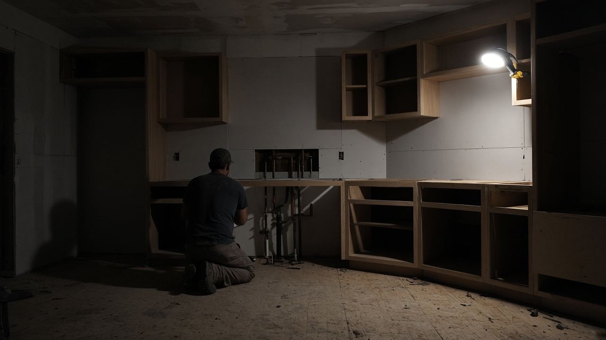
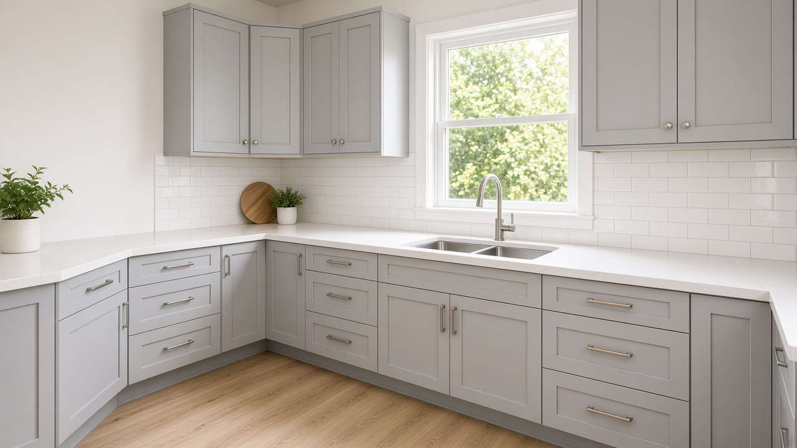
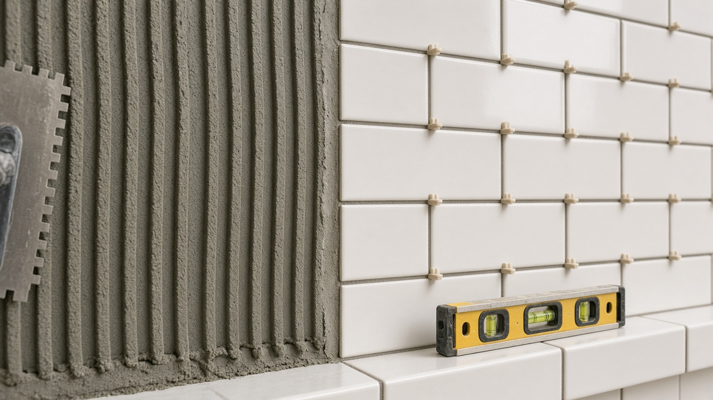
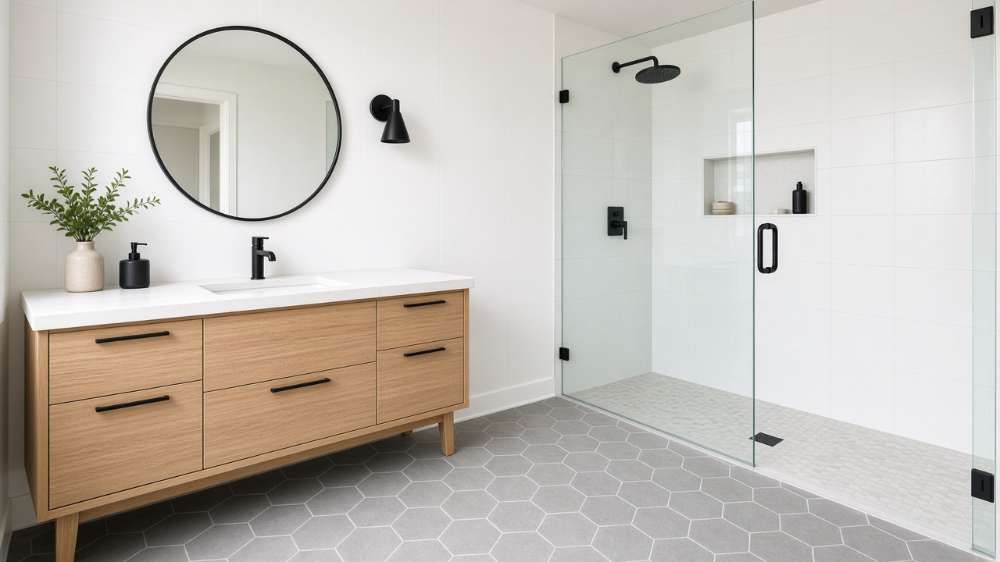
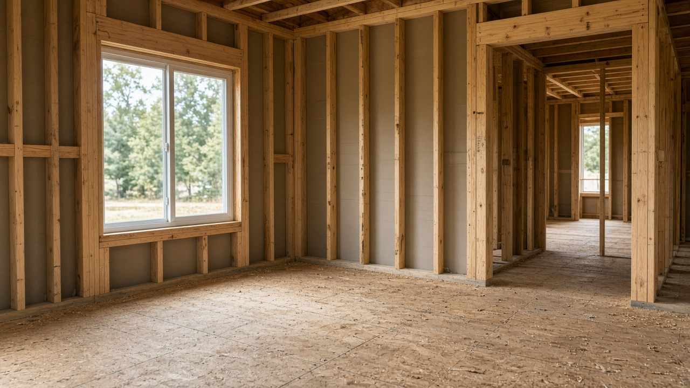

What to look for on your roof before winter
A short list you can check from the ground, and when it’s time to call someone.

This is a sample article showing how a project story is laid out. Swap in a real job: what the homeowner needed, what we found, and how it came together.
Start with the situation. What wasn’t working in the space, and what did the homeowner want to change? Keep it short and specific. A few plain sentences do more than a page of adjectives.
Most projects have something that isn’t obvious at first. Describe it plainly, along with how it was handled and what it meant for the schedule.


Before
AfterPull quotes highlight one line worth remembering, such as a comment from the homeowner if they’re happy to share it.
Pull quote example



Keep reading
A short list you can check from the ground, and when it’s time to call someone.
Layout, budget and timing questions worth answering before anything gets torn out.
A quick look at framing on a residential build, from the first wall to the roof line.